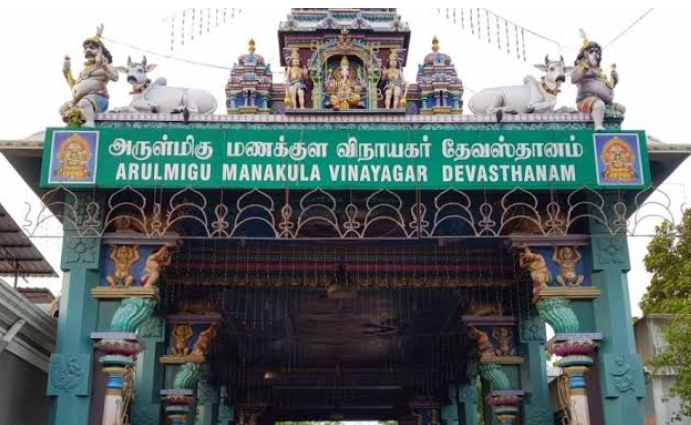

SRI MANAKULA VINAYAGAR TEMPLE
Being more than 500 years old, it has an illustrious history and is one
of the oldest temples in the region. The temple derives its name from two
Tamil words Manal meaning 'sand' and Kulam meaning 'pond near the sea'.
The temple was known by the name Manal Kulathu Vinayagar earlier.

The Manakula Vinayagar Temple, in Puducherry, is a grand and beautiful
temple, dedicated to the Hindu lord Ganesha. Puducherry might be a place
full of churches but Manakula Vinayagar Temple is highly coveted among
Hindu devotees and tourists, traveling from all parts of the country.
Being more than 500 years old, it has
an illustrious history and is one of the oldest temples in the region.